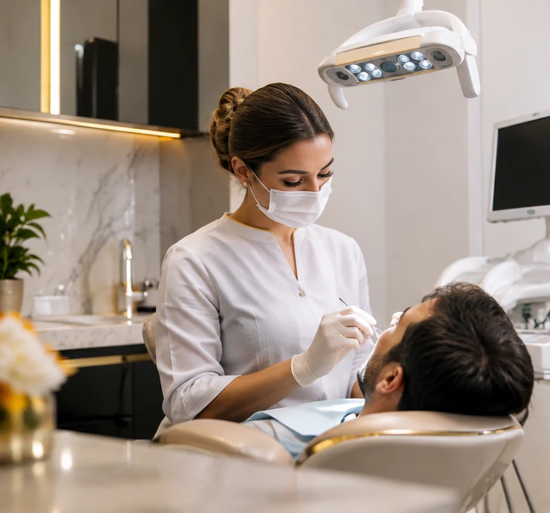
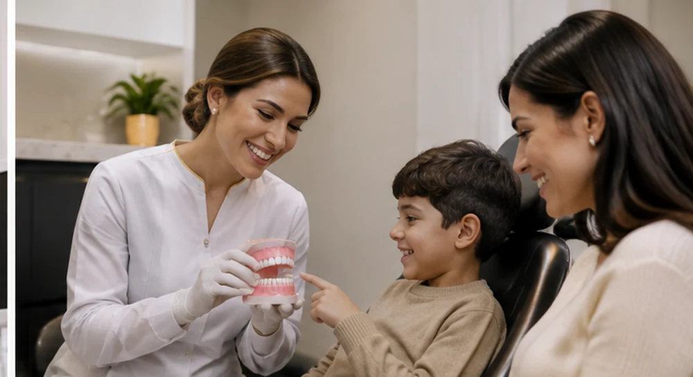
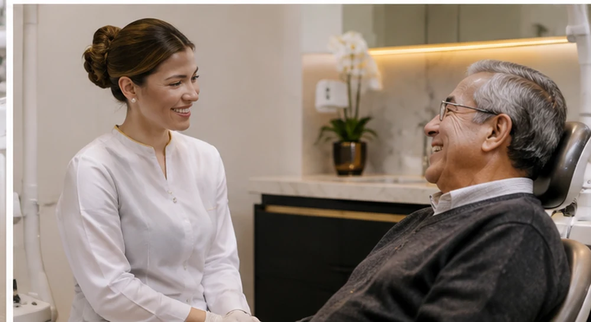

Ortodoncia
Alineación dental y evaluación de mordida; brackets y seguimiento según diagnóstico.
ConsultarDENTAL FLORES · SAN MARTÍN DE PORRES
Atención odontológica integral con experiencia, cercanía y tratamientos personalizados para cada etapa de tu vida.

Imágenes referenciales generadas con inteligencia artificial. No representan a la doctora ni sus instalaciones reales.
ATENCIÓN INTEGRAL
Odontología integral y atención para diferentes edades. La indicación de cada procedimiento requiere evaluación.
Alineación dental y evaluación de mordida; brackets y seguimiento según diagnóstico.
ConsultarConsultas, diagnóstico, controles periódicos y planes de cuidado bucal.
ConsultarProfilaxis, prevención y recomendaciones de higiene oral.
ConsultarTratamiento de caries y reconstrucción conservadora de piezas dentales.
ConsultarEvaluación y tratamiento de conductos cuando corresponde.
ConsultarEvaluación y procedimientos de extracción según indicación clínica.
ConsultarEvaluación, prevención y tratamiento de problemas gingivales.
ConsultarRehabilitación funcional y estética con opciones fijas o removibles.
ConsultarBlanqueamiento y otras opciones estéticas, según valoración.
ConsultarPrevención y cuidado dental adaptado a niños y adolescentes.
ConsultarTratamientos disponibles según evaluación profesional, indicaciones clínicas y disponibilidad del consultorio. Solicita información por WhatsApp.
NUESTRO ENFOQUE DESTACADO
La ortodoncia busca mejorar la posición de los dientes y la relación de la mordida. Cada caso merece una evaluación cuidadosa y un plan acorde con las necesidades de la persona.


CONOCE A LA PROFESIONAL
Cirujana dentista · Universidad de San Martín de Porres · Enfoque en Ortodoncia
Con 10 años de experiencia en atención odontológica y formación especializada en Ortodoncia, la Dra. Flores acompaña a sus pacientes con una atención cercana, explicaciones claras y tratamientos adaptados a cada necesidad.
COP y RNE: pendientes de incorporar después de verificar la documentación profesional. Las fotografías son referenciales.
Agendar con la Dra. FloresASÍ TE ATENDEMOS
Queremos que el proceso de atención sea cómodo, sencillo y transparente desde el primer contacto.
Conversa con nosotros por WhatsApp y cuéntanos qué atención necesitas.
Coordinamos la fecha y hora de tu consulta, según disponibilidad.
Revisamos tu caso y te explicamos las alternativas de tratamiento.
Te orientamos sobre los controles y cuidados posteriores que correspondan.
DUDAS FRECUENTES
Si necesitas más información, puedes comunicarte directamente por WhatsApp antes de reservar tu cita.
Hacer una consultaEscríbenos al WhatsApp +51 910 014 500. Te ayudaremos a coordinar una fecha y un horario disponible.
Sí. Ofrecemos atención orientada a las necesidades de niños, adultos y adultos mayores, siempre después de una evaluación clínica.
La indicación depende de cada caso. Puedes consultar por evaluación de mordida, alineación dental y tratamiento con brackets; las opciones se definen en consulta.
El costo se determina según el diagnóstico, el tipo de tratamiento y su complejidad. Solicita información por WhatsApp para una evaluación.
VISÍTANOS EN LIMA NORTE
Calle Los Girasoles, Urb. California, Mz. B, lote 19
San Martín de Porres, Lima, Perú
De 8:00 a. m. a 8:00 p. m.
Días y disponibilidad: confirmar por WhatsApp.TU PRÓXIMA VISITA